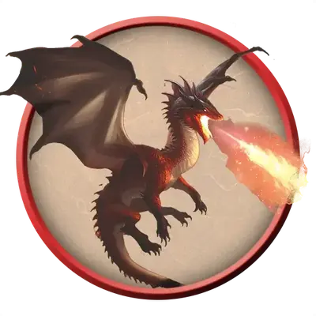

Молодой красный дракон
Young Red Dragon
Большой Дракон (Цветной), Хаотичный Злой

Класс Защиты 18 Инициатива +4 (14)
Хиты 178 (17к10 + 85)
Скорость 40 футов, Полёта 80 футов, Лазания 40 футов
| мод | спас | ||
|---|---|---|---|
| СИЛ | 23 | +6 | +6 |
| ЛОВ | 10 | +0 | +4 |
| ТЕЛ | 21 | +5 | +5 |
| мод | спас | ||
|---|---|---|---|
| ИНТ | 14 | +2 | +2 |
| МДР | 11 | +0 | +4 |
| ХАР | 19 | +4 | +4 |
Иммунитеты Огонь
Чувства Тёмное зрение 120 футов, пассивное Восприятие 18, Слепое зрение 30 футов
Языки Общий, Драконий
Опасность 10 (5 900 опыта; БВ +4)
Действия
Мультиатака. Дракон совершает три атаки Раздиранием.
Раздирание. Бросок рукопашной атаки: +10, досягаемость 10 фт. Попадание: 13 (2к6 + 6) Рубящего урона плюс 3 (1к6) урона Огнём.
Огненное дыхание (Перезарядка 5–6). Спасбросок Ловкости: Сл 17, каждое существо в 30-футовом Конусе. Провал: 56 (16к6) урона Огнём. Успех: Только половина урона.
Бонус мастерства +4
Среда обитания Горы, Холмы
Сокровища Любые
Красные драконы
Драконы жадности и опустошения
Красные драконы берут всё, что захотят, и обращают в пепел всех, кто осмеливается встать на их пути. Однако им всегда нужно больше — больше магии, земель, сокровищ и всего остального, что подогревает их жестокие амбиции.
Эти драконы устраивают свои логова среди крутых скал и вулканов. В своих владениях они собирают и тщательно охраняют груды сокровищ. Как правило, они прекрасно помнят содержимое своей коллекции и знают, где лежит каждый предмет. Если хотя бы один предмет из клада пропадает, красные драконы впадают в ярость и не знают покоя, пока не вернут свои сокровища назад и не сожгут воров.
Красные драконы считают себя величайшими из всех драконов и, следовательно, величайшими из всех существ. Так они видят мир: грабёж и завоевание — их право, лучшее место для всех сокровищ — их кладовые, а служба им — наивысшая привилегия для остальных.
Молодые красные драконы — одни из самых непредсказуемых драконов. Они ищут места, где много сокровищ и возможных сторонников, и совершают на них налёты, сжигая и убивая население, чтобы подчинить его своей воли. Пока эти драконы не встретят серьёзного сопротивления, они будут укреплять своё положение и править с помощью террора на протяжении многих веков.